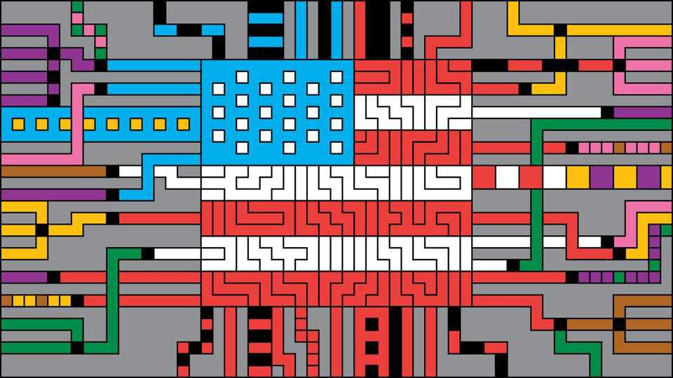
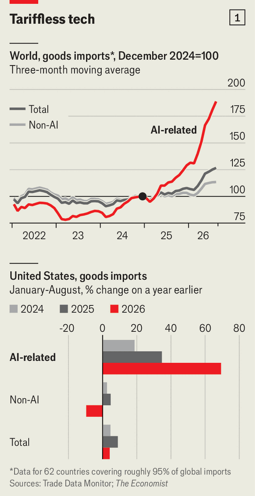
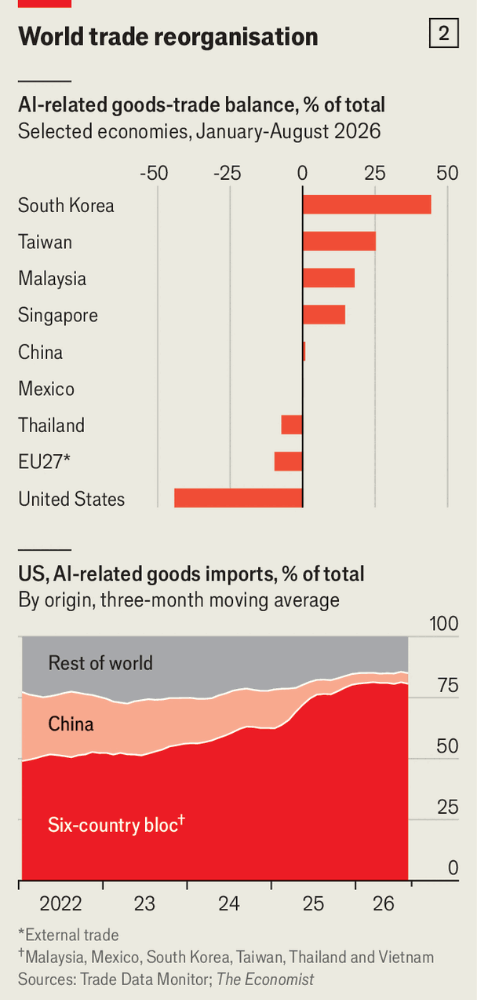

AI is turning protectionists into free traders
Barriers to commerce are rising—except in technology

Nov 5th 2026
A YEAR AND a half ago Donald Trump was riding high and bent on reversing globalisation. As Americans fretted about the cost of living, the self-proclaimed “Tariff Man” declared “chronic trade deficits” a “national emergency” and slapped hefty tariffs on imports. The protectionist mood spread. In August India’s prime minister, Narendra Modi, urged his fellow citizens to embrace swadeshi (self-sufficiency), insisting that not “a single foreign thing” should enter their homes. The European Union moved to double tariffs on steel imports. Mexico approved steep levies on goods from China and other Asian economies. An index compiled by economists from the World Trade Organisation (WTO) and the IMF shows that restrictive trade measures rose by over 60% in 2025 alone.
Yet for all the protectionist fervour, global trade today is booming. Since the final quarter of 2024, just before Mr Trump returned to office, the dollar value of world trade has surged by more than 27%. The pace has accelerated this year. In the first eight months of 2026 it was up by 18% on the same period last year, a remarkable pace by historical standards. Even by volume, trade is expected to grow faster than the world economy for a second year running—a hallmark of globalisation’s heyday before the financial crisis of 2007-09.
Free traders can thank artificial intelligence. As firms race to build data centres, trade in the servers, chips and networking equipment that power them has soared. Governments, eager to build AI capabilities at home, have largely spared foreign hardware from tariffs. Using the WTO’s classification of AI-related goods, The Economist calculates that trade in such products exploded by 55% in the first eight months of 2026, compared with a year earlier. Strip out AI-related goods and world trade is still growing, but at a far less impressive pace (see chart 1, top panel). AI hardware accounts for about a quarter of world imports, up from 15% in 2023. Protectionists, it seems, have learned to love free trade when it suits them.

Nowhere is AI trade perkier than in America. Spending on computers, telecoms gear and data-centre construction now amounts to 2.5% of GDP. Almost all the kit comes from abroad: for every dollar America invests in high-tech equipment, it imports roughly 90 cents’ worth, according to the Federal Reserve. Imports of AI-related goods are on course to exceed an eye-watering $1trn this year.
The world’s largest importer, then, is not retreating from globalisation quite as planned. America’s goods imports have risen by 16% since late 2024, roughly in line with their trend from 2018 to 2024. But the AI boom has transformed what America buys from abroad. We calculate that imports of AI-related products surged by 69% in the first eight months of 2026, compared with the same period last year. Imports of everything else fell by 10% (see chart 1, bottom panel). Three years ago America imported more than five times as much in vehicles, oil, pharmaceuticals and metals as in servers, chips and networking kit. Now the latter group has edged ahead.
Since his “Liberation Day” tariffs in April 2025, Mr Trump has largely spared hardware powering the AI boom. Fully 97% of computing-hardware imports and 85% of networking-equipment imports fall into categories covered by tariff exemptions, according to a study by an economist at the Minneapolis Fed. In 2025 Uncle Sam collected tariffs equivalent to less than 2% of the value of imported computing and networking equipment, compared with nearly 10% on goods unrelated to AI.
Even the grandly named “semiconductor tariffs” imposed in January are full of holes. The 25% levy is aimed chiefly at advanced chips such as Nvidia’s H200, which must pass through America for inspection on their way from Taiwan to China. Exemptions for American data centres, startups, research and other domestic uses are so sweeping that the Congressional Research Service, a non-partisan beancounter, questions whether any of the affected imports of chips would pay the tariff at all.

The protectionist-in-chief’s embrace of free trade has complicated his ambition to shrink America’s trade deficit. In September the goods deficit reached $136bn, more than 70% wider than a year earlier, as total imports hit a record high. Appetite for foreign AI hardware is part of the explanation. America accounts for four in ten global imports of servers, computer parts and networking gear, against just one in six for other goods. Its exports of such equipment are nowhere near large enough to offset these purchases. The result is by far the largest AI-related trade deficit among major economies (see chart 2, top panel). Had imports of AI-related goods grown at the same pace as other imports in recent years, the goods deficit would have been 16%, or nearly $200bn, smaller in 2025.
All this shows the folly of judging economic success by trade deficits. A server assembled abroad worsens the goods balance when it enters the country. But installed in an American data centre, it becomes productive capital, generating computing power for years to come. Research by the Fed finds that previous technology-driven investment booms widened the current-account deficit even as they raised output. Free trade allows American firms to concentrate on what they do best, from chip design to AI research and software, while relying on specialised manufacturers abroad for the equipment.
AI’s labyrinthine supply chains, meanwhile, expose the limits of reshoring. Six economies—Taiwan, Mexico, Vietnam, Thailand, South Korea and Malaysia—account for more than four-fifths of America’s AI imports (see chart 2, bottom panel). Mexico and Taiwan alone supply 85% of its imports of AI servers and other computer-processing kit. Though this will include some rerouted goods, China’s observable share of such imports has plunged, as have those of other countries outside the sextet.
Consider an Nvidia GB300 AI server rack destined for an American data centre. Its chips are designed in America, fabricated in Taiwan using Dutch lithography machines fitted with precision mirrors made in Germany, and paired with high-bandwidth memory, a South Korean speciality. Eighteen compute trays, containing 72 powerful AI chips, then travel from Taiwan to Mexico, where workers combine them with cooling systems, power modules, network switches and components sourced from China and Vietnam. The completed racks then head north across the border. And that is the simplified version. Even Nvidia’s Blackwell AI chips, now being fabricated by Taiwan's biggest chipmaker in Arizona, must travel back to Asia to be packaged with high-bandwidth memory.
Mr Trump’s unlikely embrace of free trade has its limits, even in AI. His tariffs on steel, aluminium and copper are making data centres more expensive to build, raising the cost of everything from building materials to cooling systems. The Centre for Strategic and International Studies (CSIS), a think-tank, estimates that existing metal tariffs could add $130bn to America’s planned data-centre buildout by 2030.
Worse could be coming. The president is considering broader tariffs on semiconductors and products containing them, potentially including the servers powering America’s AI boom. A blanket 25% levy could add $360bn to data-centre construction costs, CSIS reckons.
Perhaps the midterm elections on November 3rd will make the administration think twice. Americans liked the idea of tariffs until their prices rose as a result. Now they are rediscovering their inner free traders. Roughly two-thirds of voters in the midterms believe Mr Trump’s levies have hurt the economy, according to election-night polling. Discontent over living costs helped Democrats make sweeping gains. Even if the president does not take the hint, though, globalisation is proving a stubborn thing to kill. ■